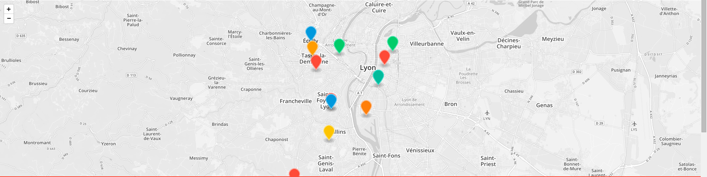

Vous avez une question ? N'hésitez pas, nous lisons tous les emails et prenons le temps de répondre à chacune de vos demandes et dans les plus bref délais. Confectionnons ensemble des recettes simples mais originales. Des produits frais et une technique précise à la portée de tous.

S'inscrire à la newsletter :